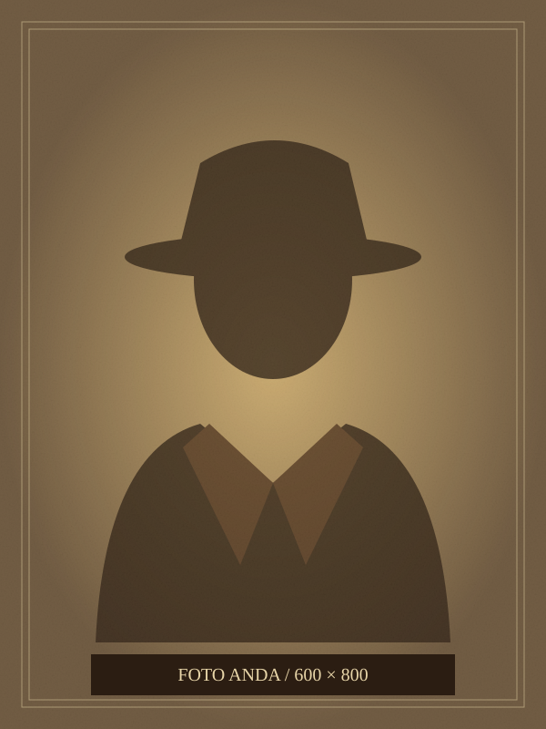

DUSTY TRAIL
Karya digital dari perbatasan
Setiap jejak punya cerita. Setiap karya punya nyawa.

Buku Catatan
Pengelana
Di sini tersimpan cerita, keterampilan, dan karya seorang pengelana digital.
Konten pribadi memerlukan JavaScript. Aktifkan untuk membuka seluruh catatan.
Dusty Trail
Bawa salinan CVPerlengkapan
& Keahlian
Alat yang menemani setiap perjalanan, dari sketsa pertama hingga baris kode terakhir.
Inventaris keahlianLevel / keterangan
Daftar keahlian tampil saat JavaScript aktif.
Keterangan mengikuti CV; bahasa tidak diberi tingkat kefasihan.
Papan Buronan
Eksperimen dari meja kerja sendiri.
Catatan proyek dan layanan yang saya bangun.
Poster proyek tampil saat JavaScript aktif.
Pilih “Balik poster” untuk membaca kisah di balik karya.
Jalur Perjalanan
Setiap persinggahan meninggalkan sesuatu untuk dibawa ke depan.
- Catatan pengalaman tampil saat JavaScript aktif.